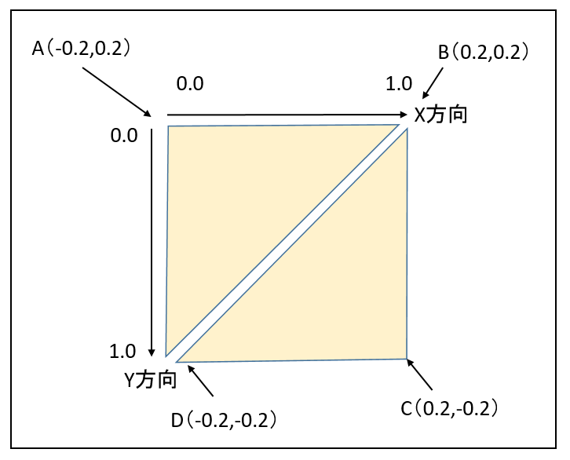

図1204a
「MoveSquareクラス」は四角形のオブジェクトです。それを表現するのに「三角形を２つ」描画します。上図のようなイメージです。
void MoveSquare::OnInit() {
auto baseDevice = App::GetBaseDevice();
auto commandList = baseDevice->GetCommandList();
auto aspectRatio = baseDevice->GetAspectRatio();
D3D12_GRAPHICS_PIPELINE_STATE_DESC PipeLineDesc;
m_ptConstPipelineState
= PipelineState::CreateDefault2D<VertexPositionTexture, VSPTSprite, PSPTSprite>(
baseDevice->GetRootSignature(),
PipeLineDesc
);
//メッシュ
{
float HelfSize = 0.2f;
//頂点配列
vector<VertexPositionTexture> vertices = {
{ VertexPositionTexture(Float3(-HelfSize, HelfSize, 0), Float2(0.0f, 0.0f)) },
{ VertexPositionTexture(Float3(HelfSize, HelfSize, 0), Float2(1.0f, 0.0f)) },
{ VertexPositionTexture(Float3(-HelfSize, -HelfSize, 0), Float2(0.0f, 1.0f)) },
{ VertexPositionTexture(Float3(HelfSize, -HelfSize, 0), Float2(1.0f, 1.0f)) },
};
//インデックス配列
vector<uint32_t> indices = { 0, 1, 2, 1, 3, 2 };
//四角形メッシュの作成
m_ptSquareMesh = BaseMesh::CreateBaseMesh<VertexPositionTexture>(
vertices, indices
);
}
//テクスチャ
{
auto TexFile = App::GetRelativeAssetsPath() + L"sky.jpg";
//テクスチャの作成
//シェーダリソースハンドルを作成
m_srvIndex = baseDevice->GetCbvSrvUavNextIndex();
CD3DX12_CPU_DESCRIPTOR_HANDLE srvHandle(
baseDevice->GetCbvSrvUavDescriptorHeap()->GetCPUDescriptorHandleForHeapStart(),
m_srvIndex,
baseDevice->GetCbvSrvUavDescriptorHandleIncrementSize()
);
//画像ファイルをもとにテクスチャを作成
m_SkyTexture = BaseTexture::CreateBaseTexture(TexFile, srvHandle);
}
//サンプラー
{
auto samplerDescriptorHandle
= baseDevice->GetSamplerDescriptorHeap()->GetCPUDescriptorHandleForHeapStart();
Sampler::CreateSampler(SamplerState::LinearClamp, samplerDescriptorHandle);
}
//コンスタントバッファハンドルを作成
m_constBuffIndex = baseDevice->GetCbvSrvUavNextIndex();
CD3DX12_CPU_DESCRIPTOR_HANDLE Handle(
baseDevice->GetCbvSrvUavDescriptorHeap()->GetCPUDescriptorHandleForHeapStart(),
m_constBuffIndex,
baseDevice->GetCbvSrvUavDescriptorHandleIncrementSize()
);
m_ConstantBuffer = ConstantBuffer::CreateDirect(Handle, m_constantBufferData);
}
float HelfSize = 0.2f;
vector<VertexPositionTexture> vertices = {
{ VertexPositionTexture(Float3(-HelfSize, HelfSize, 0), Float2(0.0f, 0.0f)) },
{ VertexPositionTexture(Float3(HelfSize, HelfSize, 0), Float2(1.0f, 0.0f)) },
{ VertexPositionTexture(Float3(-HelfSize, -HelfSize, 0), Float2(0.0f, 1.0f)) },
{ VertexPositionTexture(Float3(HelfSize, -HelfSize, 0), Float2(1.0f, 1.0f)) },
};